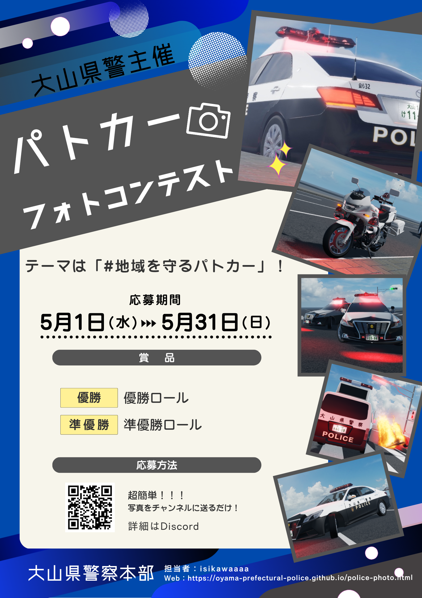

第1回 大山県警フォトコンテスト

開催概要
大山県警察本部では、地域の安全や警察の活動を身近に感じていただくため、「わたしたちの街の守り人」をテーマにしたフォトコンテストを開催します。
募集要項
- 応募テーマ：「街の安全」「警察官の活動風景」「交通安全への願い」など
- 応募期間：2026年5月1日 〜 2026年7月31日（当日消印有効）
- 応募資格：大山県内在住の方

大山県警察本部では、地域の安全や警察の活動を身近に感じていただくため、「わたしたちの街の守り人」をテーマにしたフォトコンテストを開催します。